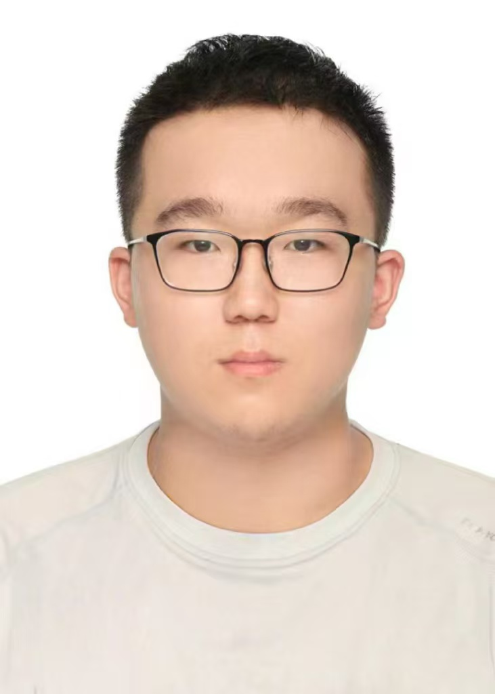

Qibo Xue (薛琪博)
Incoming M.Phil. Student
Department of Computer Science and Engineering
The Chinese University of Hong Kong
Supervisor: Prof. Bei Yu
Email: xueqb0403@163.com
Biography
I will be an M.Phil. student at the Department of Computer Science and Engineering, the Chinese University of Hong Kong (CUHK), supervised by Prof. Bei Yu, starting from Fall 2026. Prior to that, I began my undergraduate study in Electronic Science and Engineering at Nanjing University in 2022 and will graduate in 2026.
Research Interests
- AI/LLM in EDA
- LLM and LLM Agents
- AI for Science
Publications
- Zunhai Su, Qingyuan Li, Hao Zhang, Weihao Ye, Qibo Xue, Yulei Qian, Ngai Wong, Kehong Yuan, “Unveiling Super Experts in Mixture-of-Experts Large Language Models,” International Conference on Learning Representations (ICLR, Poster).
- Hengyuan Zhang, Zhihao Zhang, Ercong Nie, Mingyang Wang, Zunhai Su, Yiwei Wang, Qianli Wang, Shuzhou Yuan, Xufeng Duan, Qibo Xue, Zeping Yu, Chenming Shang, Xiao Liang, Jing Xiong, Hui Shen, Chaofan Tao, Zhengwu Liu, Senjie Jin, Zhiheng Xi, Dongdong Zhang, Sophia Ananiadou, Tao Gui, Ruobing Xie, Hayden Kwok-Hay So, Hinrich Schuetze, Xuanjing Huang, Qi Zhang, Ngai Wong, “Locate, Steer, and Improve: A Practical Survey of Actionable Mechanistic Interpretability in Large Language Models,” Annual Meeting of the Association for Computational Linguistics (ACL Findings).
Ongoing Projects
- An automation-oriented work on LDMOS device design, currently under review at IEEE Transactions on Computer-Aided Design of Integrated Circuits and Systems (TCAD).
- A work related to Incremental RAG, currently under review at IEEE/ACM International Conference on Computer-Aided Design (ICCAD).
Education
-
The Chinese University of Hong Kong (CUHK)
M.Phil. in Computer Engineering and Technology
Starting Fall 2026
Supervisor: Prof. Bei Yu -
Nanjing University
B.Eng. in Electronic Science and Engineering
2022 - 2026